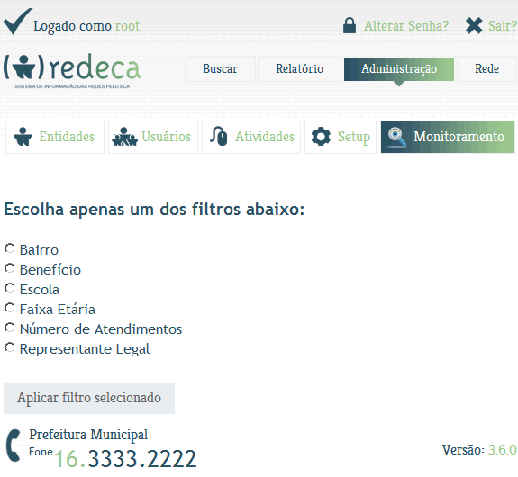
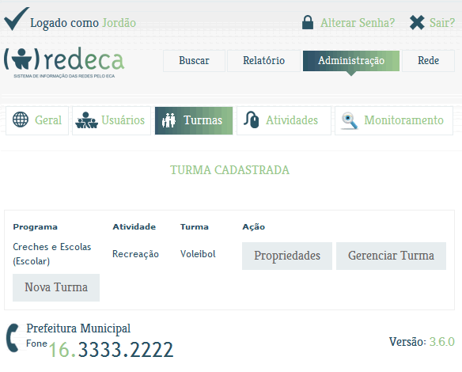
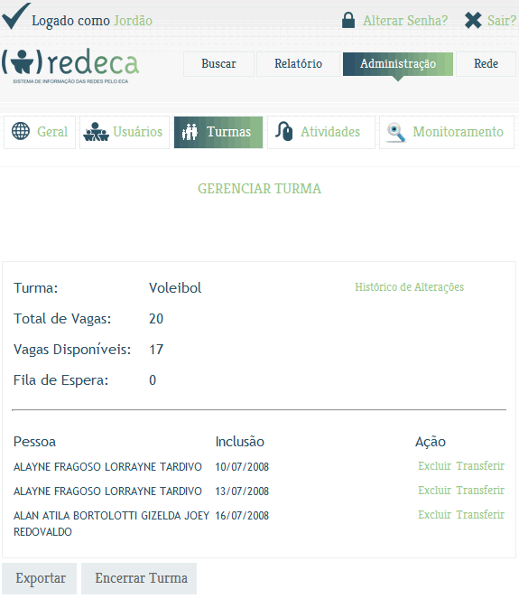

Detalhes desta versão
Este documento descreve todos
os ítens disponibilizados na versão 3.6.0.
Esta versão contempla a adição do módulo Monitoramento e adiciona uma nova maneira de gerenciar as turmas.
Caso a sua dúvida ou sugestão
não tenha sido abordada na Comunidade Redeca
disponível dentro do Portal do Software Público e
nem neste
documento, envie um e-mail para:
suporte-redeca@s2it.com.br. Caso prefira, poste sua
colocação nos fóruns de
discussão do Redeca dentro do Portal do Software
Público.
Atenciosamente.
S2IT Solutions
Monitoramento adicionado ao Redeca.
Agora, coordenadores e administradores podem gerar listagens e gráficos, através do módulo Monitoramento, conforme opção escolhida abaixo:

Gerenciamento de turma via interface.
Foram implementadas funcionalidades para facilitar o acompanhamento de pessoas que estão na lista de espera, migrar pessoas entre turmas e acompanhar o histórico de alterações sobre as edições efetuadas pelos usuários.
Segue abaixo imagens que demonstram estas implementações.
Botões Propriedades e Gerenciar Turma.

Tela Gerenciar Turma.
